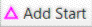

Add/Start
Toolbar Button:

The Add Start command adds a start to the beginning of the currently displayed course. If the course already has a start, it is replaced with the new start.
When this command is selected, any existing start controls in the control collection that are not already in the current course are shown in light purple on the current course map.
- To add an existing start to the current course, click on the light purple existing start.
- To add a new start to the current course, click elsewhere on the map.
When a new start is created, it is added to all courses that do not already have a start control.